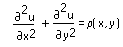
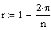

Relaxation Method for Partial Differential Equations
relax(A, B, C, D, E, S, U, rjac)
multigrid(M, ncycle)
Return a square matrix in which an element's location in the matrix corresponds to
its location within a square region, and an element's value approximates the solution
to Poisson's PDE

at that point. The relax function solves Poisson's Equation using modified
Gauss-Seidel with successive overrelaxation over the grid. The multigrid
function solves for the special case where all boundary conditions in U
are zero, using the multigrid method.
Arguments:
A, B, C, D, E are real square matrices
of the same size containing coefficients of the discretized Laplacian approximation
to the function u at the four nearest neighbors and the approximation point.
S is a square matrix containing the source term at
each point inside the square.
U is a square matrix containing boundary values along
the edges of the region and initial guesses for the solution inside the region.
rjac is a real value 0 <
rjac < 1, the spectral radius of the Jacobi iteration. This controls
the convergence of the relaxation algorithm. Its optimal value depends on
the details of your problem, but 
is a good starting value, where n is the number
of points in each direction on the grid.
M is a 1 + 2n
square matrix whose elements correspond to the source term at the corresponding
point in the square domain.
ncycle is the integer number of cycles at each
level of the multigrid iteration. A value of 2 generally gives
a good approximation of the solution.
Notes:
If your boundary conditions are constant and equal on all four sides, transform
the equation to have zero boundary conditions on all sides and use multigrid,
as it is faster and easier to set up.
Poisson's equation reduces to Laplace's equation in the case ρ
= 0.
If you are trying to solve a hyperbolic or parabolic PDE, or system of
PDEs, use numol or Pdesolve.